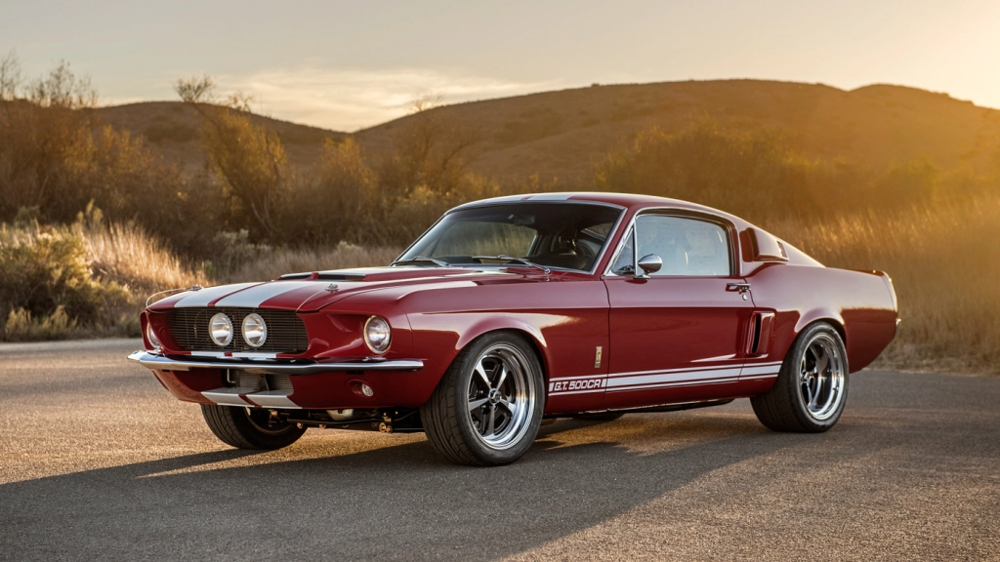
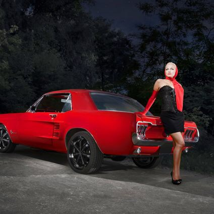
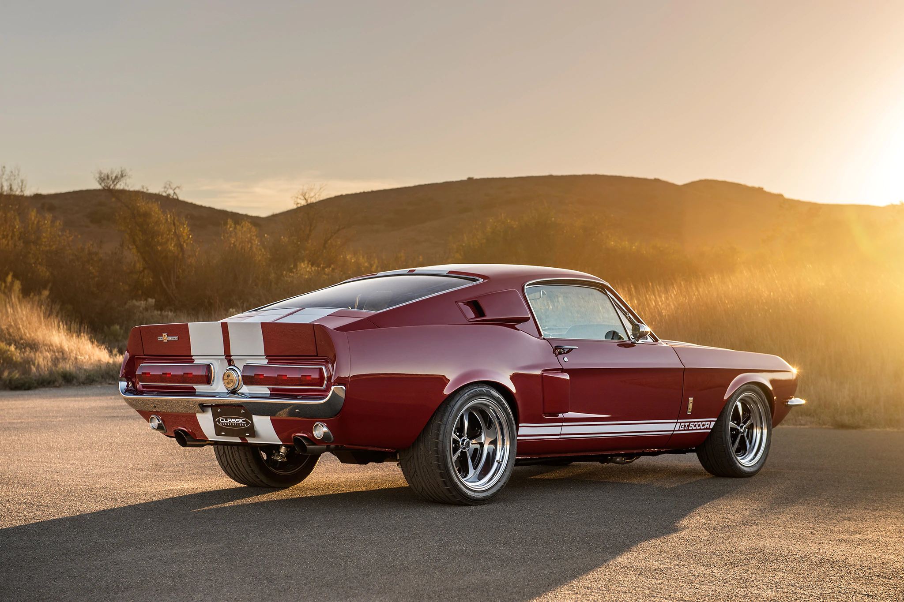
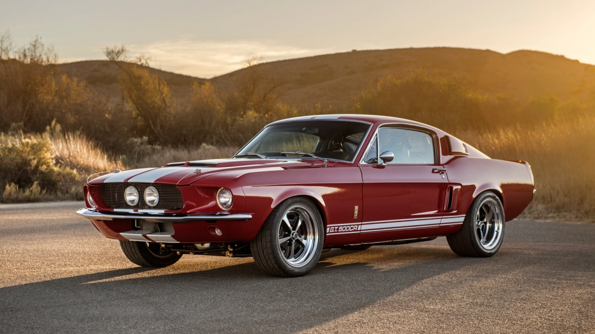
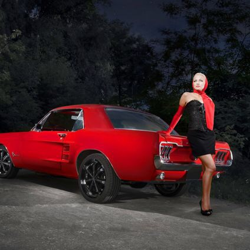
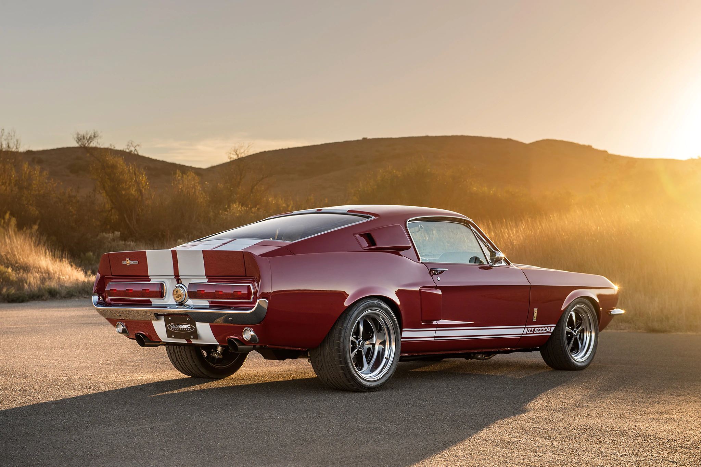

ИНТЕРЕСНЫЕ ФАКТЫ ПРО
2018 BMW M5
Создатель авто, Ли Якокка, долго не мог определиться с именем авто.
Изначально полагали, что это будет модификация Ford Falcon, но позже поняли,
что необходимо сделать его отдельным автомобилем и начали искать ему имя.
Команда выбирала между Bronco, Puma, Cheetah, Colt, но, все же остановились на Mustang.
Необычная судьба постигла первый экземпляр Ford Mustang.
Перед тем, как представить авто потребителю, производители отдают первый экземпляр в для тестов.
Но кто-то допустил ошибку в адресе доставки и Мустанг отправили домой пилоту,
который не был сотрудником Ford. Только спустя два года переговоров концерну удалось-таки заполучить авто обратно